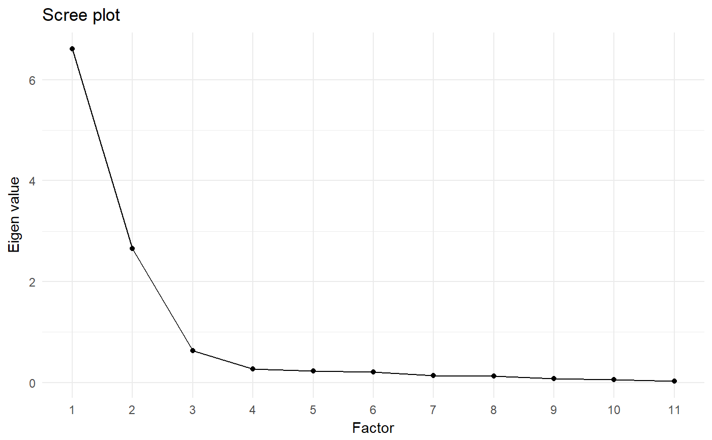

Wrapper for psych's factor analysis and principal components analysis functions
This function is meant as a wrapper to the excellent fa and principal functions from the psych package. This function was developed to provide a more familiar interface for users coming from SPSS.
facComAnalysis(data, items = NULL, nfactors = NULL, fm = "pa", rotate = "default", covar = FALSE, screeplot = TRUE, SMC = FALSE, maskLoadingsUnder = NULL, showUnrotatedLoadings = FALSE, factorCorrelations = "score.cor", ...)
Arguments
| data | The dataframe containt the items to analyse. |
|---|---|
| items | The items to analyse; if none are specified, all items in the dataframe are analyses. |
| nfactors | The number of factors to extract. The default, |
| fm | The method to use. Specify |
| rotate | Which rotation to use. The default, aptly called |
| covar | Whether to analyse the covariance matrix or the correlation matrix. If the items are to be aggregated without first standardizing them (which is by far the more common approach), the covariance matrix should be analysed. However, if the items are going to be standardized before aggregation, the correlation matrix will be used. However, because analysing the correlation matrix is the default setting in both SPSS and |
| screeplot | Whether to generate and show a screeplot. |
| SMC | The SMC argument can be used to specify, for factor analysis, whether to start the initial iteration with 1 ( |
| maskLoadingsUnder | Whether to show all factor loadings (if set to |
| showUnrotatedLoadings | Whether to only show the rotated factor loadings, or the original (unrotated) factor loadings as well. |
| factorCorrelations | Whether to show the factor correlations from |
| … | Any additional arguments are passed to |
Value
This function returns an object with the original psych function objects in the intermediate sub-object, and the primary results such as the factor loading and the plot in the output sub-object.
References
Fried, E. I. (2017). What are psychological constructs? On the nature and statistical modeling of emotions, intelligence, personality traits and mental disorders. Health Psychology Review, 11(2), 130-134. http://doi.org/10.1080/17437199.2017.1306718
Peters, G.-J. Y. (2014). The alpha and the omega of scale reliability and validity: why and how to abandon Cronbach's alpha and the route towards more comprehensive assessment of scale quality. European Health Psychologist, 16(2), 56-69. http://ehps.net/ehp/index.php/contents/article/download/ehp.v16.i2.p56/1
See also
psych, fa, principal and reliability
Examples
### Generate data frame to use for the example dat <- as.data.frame(apply(mtcars, 2, scale)); ### Conduct principal components analysis facComAnalysis(dat, fm='pca');#> Principal Components Analysis #> #> Eigen values: #> #> 1 2 3 4 5 6 7 8 9 10 11 #> 6.608 2.650 0.627 0.270 0.223 0.212 0.135 0.123 0.077 0.052 0.022 #> #> Factor loadings after rotation: #> #> Factor 1 Factor 2 #> mpg 0.685 -0.633 #> cyl -0.637 0.723 #> disp -0.733 0.604 #> hp -0.323 0.883 #> drat 0.853 -0.209 #> wt -0.799 0.456 #> qsec -0.159 -0.900 #> vs 0.300 -0.821 #> am 0.921 0.077 #> gear 0.907 0.166 #> carb 0.078 0.866### Conduct factor analysis, and mask ### all factor loadings under .3 facComAnalysis(dat, maskLoadingsUnder = .3);#> Factor Analysis #> #> Eigen values: #> #> 1 2 3 4 5 6 7 8 9 10 11 #> 6.608 2.650 0.627 0.270 0.223 0.212 0.135 0.123 0.077 0.052 0.022 #> #> Factor loadings after rotation: #> #> Factor 1 Factor 2 #> mpg 0.54 #> cyl 0.71 #> disp 0.58 #> hp 0.89 #> drat 0.78 #> wt 0.42 #> qsec #> vs #> am 0.93 #> gear 0.93 #> carb 0.85 #> #> Correlations between factors: #> #> Factor 1 Factor 2 #> Factor 1 1.00 -0.54 #> Factor 2 -0.54 1.00